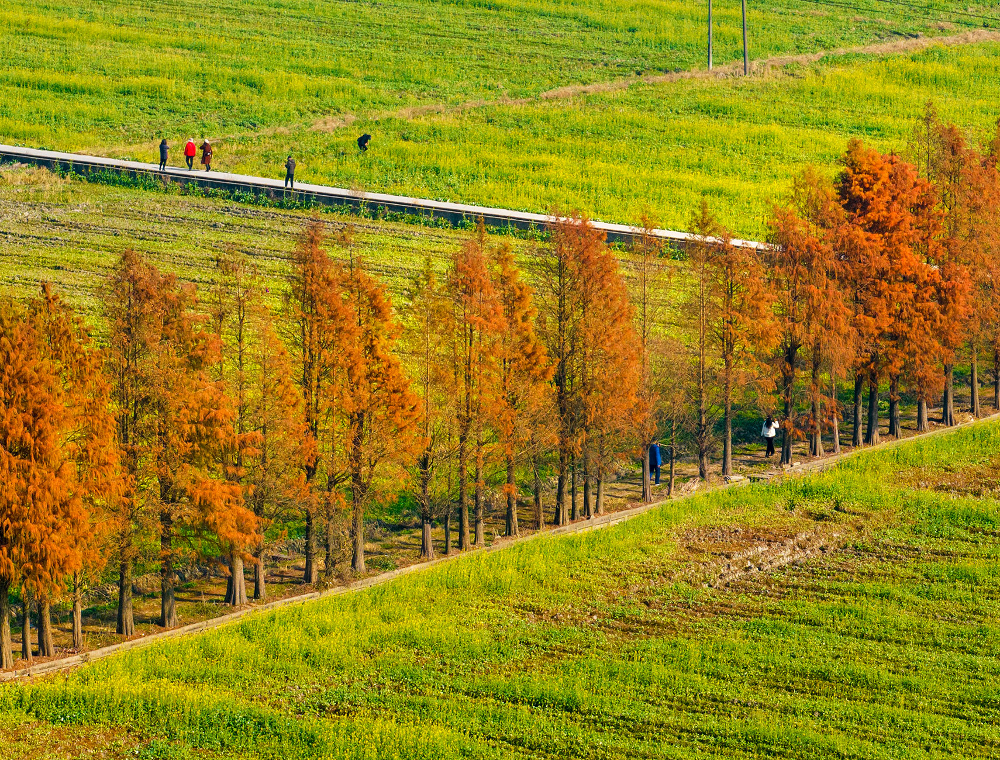
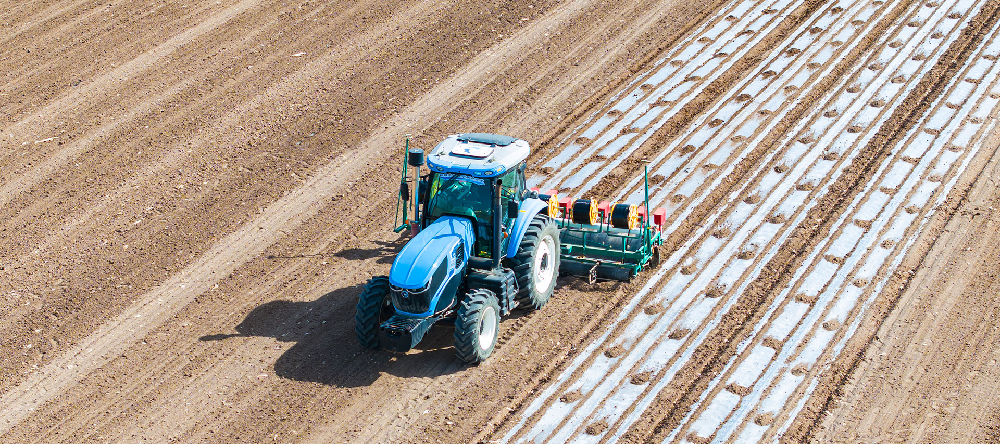

La tecnología impulsa el desarrollo de la industria algodonera de Xinjiang
En la principal región productora de algodón del país, la producción superó por primera vez los seis millones de toneladas y alcanzó el 92,8 % del total nacional
Una cosechadora de algodón trabaja en el condado de Yuli, región autónoma uygur de Xinjiang, China (Wang Zhipeng)
He Yong y Ardak
27/2/2026
En pleno invierno, una ligera nevada cubría los vastos campos de algodón del condado de Xayar en la región autónoma uygur de Xinjiang. El agricultor Ababekri Memet sonreía mientras revisaba las cifras de su cosecha en el teléfono móvil. "La agricultura del algodón ahora requiere menos mano de obra y los rendimientos son mucho más estables", comenta.
Un boletín de producción de algodón de 2025, publicado por la Oficina Nacional de Estadísticas de China, detalla que en Xinjiang, la principal región productora de algodón del país, la producción llegó a los 6,165 millones de toneladas, superando por primera vez la marca de los 6 millones de toneladas y alcanzando el 92,8 % del total nacional.
Aunque no es temporada alta, la actividad estaba presente en el taller de maquinaria de Ababekri mientras él y su hermano mantenían su flota: 12 tractores, tres de alta potencia, una cosechadora de algodón y tres pulverizadores especializados. "Ahora son la columna vertebral de nuestro trabajo", señaló.
En 2007, la familia de Ababekri sembró 100 mu (6,67 hectáreas) de algodón. "Nuestra mayor preocupación era la temporada de cosecha: encontrar recolectores y el aumento de los salarios consumía casi el 30 % de nuestros ingresos", recordó. En ese entonces, los campos estaban llenos de trabajadores manuales.
Cosechadora de algodón trabaja en la región autónoma uygur de Xinjiang (Bao Liangting)
Los pulverizadores especializados son 50 veces más eficientes que el trabajo manual, mientras que las tareas de deshierbe y fertilización se pueden realizar con precisión. La cosecha está dominada por recolectoras de algodón de alta eficiencia. "En el pasado, cosechar 100 mu requería 12 personas durante dos meses. Ahora, una máquina cosecha 5.000 mu en apenas 12 días", explicó.
Maquinaria avanzada y cooperativas
Los datos de la Oficina de Agricultura y Asuntos Rurales de Xayar muestran que actualmente el condado opera 54.700 máquinas agrícolas, manteniendo una tasa de mecanización del cultivo de algodón superior al 95 % durante cinco años consecutivos. Cada vez más agricultores de algodón han establecido cooperativas agrícolas, adquirido maquinaria avanzada y proporcionado servicios mecanizados.Ababekri dirige una de estas cooperativas. "El año pasado, atendimos más de 7.000 mu de tierras agrícolas", afirma. Los ingresos de la cooperativa superaron los 1,1 millones de yuanes (157.845 dólares), siendo los servicios con maquinaria responsables del 40 %.
Actualmente, las tecnologías altamente automatizadas, incluyendo la siembra de precisión, el riego por goteo integrado y la protección de cultivos basada en drones, se adoptan ampliamente en Xinjiang, aumentando de manera constante la productividad en toda la industria del algodón. El invierno marca un período crítico para los agricultores de algodón debido a que hay que seleccionar las semillas para la próxima temporada. "Las semillas son la base. Elegir las incorrectas arriesga desperdiciar todo el esfuerzo de un año", explica Ababekri.

Se han aprobado y cultivado más de siete nuevos tipos de variedades de algodón (P. D.)
En el verano de 2025, los campos de algodón de Ababekri fueron golpeados por una ola de calor prolongada. "Si hubiera usado las variedades antiguas, el rendimiento sin duda habría caído mucho", reconoce el veterano agricultor. "Pero la variedad resistente al estrés que seleccioné minimizó el impacto, y tuvimos un buen rendimiento e ingresos."
A través de medidas como el lanzamiento de variedades específicas de la región con alto rendimiento y alta calidad, y la promoción enérgica de semillas mejoradas, Xinjiang ha elevado la tasa de cobertura de variedades de algodón mejoradas a más del 98%.
Nuevas líneas de germoplasma
En 2025, el Instituto de Investigación del Algodón de la Academia de Ciencias Agrícolas de Xinjiang introdujo más de 3.400 recursos de germoplasma de origen nacional e internacional, desarrolló más de 40 nuevas líneas de germoplasma valiosas con características como tolerancia a la sequía, tolerancia a la salinidad y alcalinidad, y resistencia al calor, y cultivó y aprobó más de siete nuevos tipos de variedades de algodón.Estos logros pioneros en mejoramiento, a través de un sistema regional de multiplicación y extensión de semillas, se han transformado en beneficios tangibles en rendimiento y calidad en los campos. En el condado de Xayar, el rendimiento promedio de algodón por mu aumentó de 285 kilogramos (2017) a 442 kilogramos (2025), incrementando en promedio los ingresos de los agricultores en 1.000 yuanes por mu.
Xinjiang ahora cubre algodón, fibras químicas, hilado, tejido, impresión y teñido, prendas de vestir, textiles para el hogar y textiles industriales. Esta cadena industrial completa no solo le permite a los agricultures de algodón como Ababekri obtenger rendimientos más rápidos y estables, sino que también crea más empleos a nivel local y genera un mayor valor industrial para la región autónoma china.
OTROS TEMAS
Industria
Isla inteligente en un taller de la empresa conjunta SAIC-GM-Wuling (P. D.)
Fábricas inteligentes exploran nuevos modelos de fabricación en China
Los automóviles ya no tienen que construirse en una línea de ensamblaje tradicional. En China, la producción se organiza cada vez más en torno a lo que se conoce como 'islas de fabricación'
Leer más ->
Investigación

Montaje de la estructura de la Estación Qinling
Con el equipo chino de la Estación Qinling, en la Antártida
Treinta y dos trabajadores de la construcción permanecen durante el invierno en la quinta estación de investigación de China en este continente
Leer más ->
Automoción

Vehículos validan su rendimiento
Yakeshi se reinventa con nuevas experiencias
Situada en la Mongolia interior, esta ciudad especializada en las pruebas automovilísticas de invierno ha pasado a convertirse en un centro integral de la industria de hielo y nieve
Leer más ->
Ruido

Un parque urbano de Wuhu
Paso firme en el control de la contaminación acústica
Aumenta el porcentaje de áreas urbanas que cumplen con los estándares nacionales de ruido diurno y nocturno, reflejando la 'determinación estratégica' de China en lograr su reducción
Leer más ->

Tractor no tripulado, guiado por el Sistema de Navegación por Satélite BeiDou, siembra semillas de algodón en la región autónoma uygur de Xinjiang (He Long)
Créditos
Producción: Edicions Clariana SL | Redacción: People's Daily digital | Diseño: Martí Palma | Maquetación: Enric Abad | Fotografías: People's Daily digital
Un proyecto de Brandslab. Godó Nexus